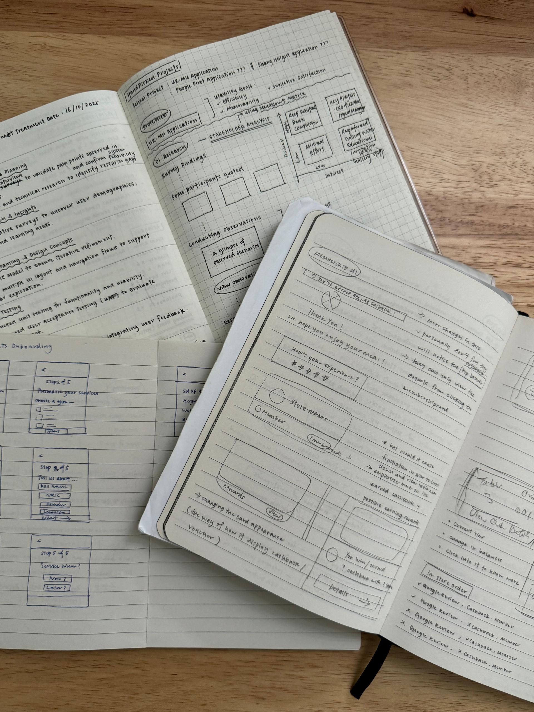
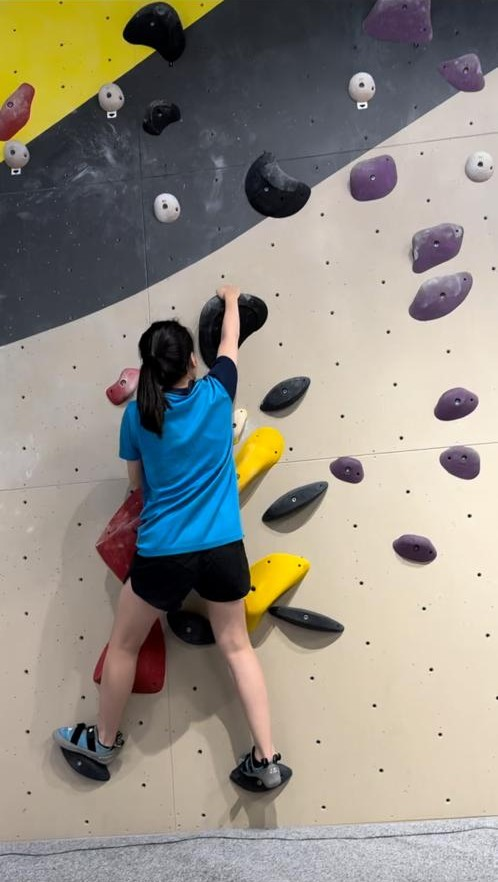
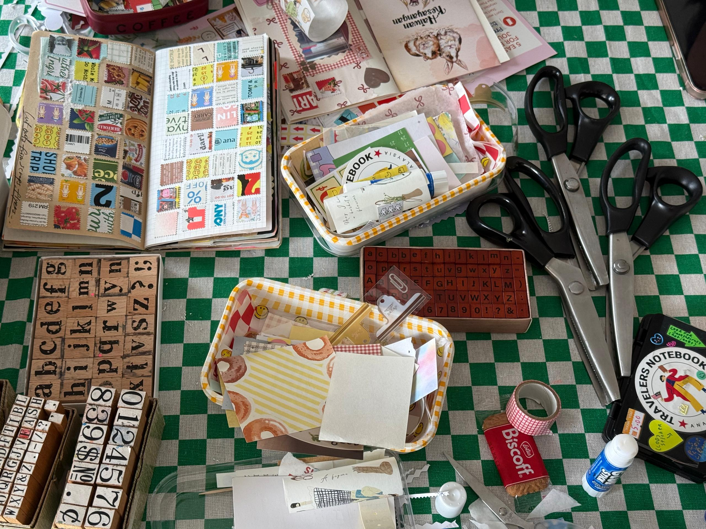
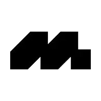

Hi, I am Shi Chi
I’ve always been deeply reflective about how I think and act — and one day, I asked myself: why not turn this into something more meaningful? That’s how I found my path into Product Design.
“Where reflection becomes the spark for creating meaningful design.”

not just completing tasks,
I focus on understanding “WHY?”
As a visionary builder, I bring together conceptual thinking and attention to detail to see both the big picture and execution. I’m a structured thinker who believes every task should start from the root cause.
life beyond 9–5




the skills i bring to table are
UX Design
UI Design
UX Research
Design Systems
Responsive Design
Interaction Design
Usability Testing
User Testing
Accessibility & Inclusion
Collaboration
Product Design
Teamwork
Empathy
Problem-solving
daily tools I use
Figma
Design Tool
Design Tool
ChatGPT
Artificial Intelligence
Artificial Intelligence

Notion
Documentation Management
Documentation Management
Miro
User Flows Builder
User Flows Builder

Jira
Issue & Project Tracking Tool
Issue & Project Tracking Tool

Googlesheets
Spreadsheets Application
Spreadsheets Application

Mobbin
Brainstorming Tool
Brainstorming Tool